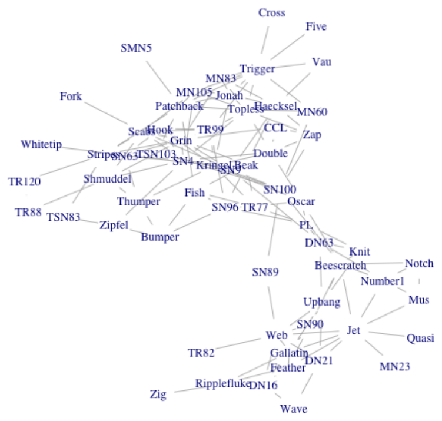
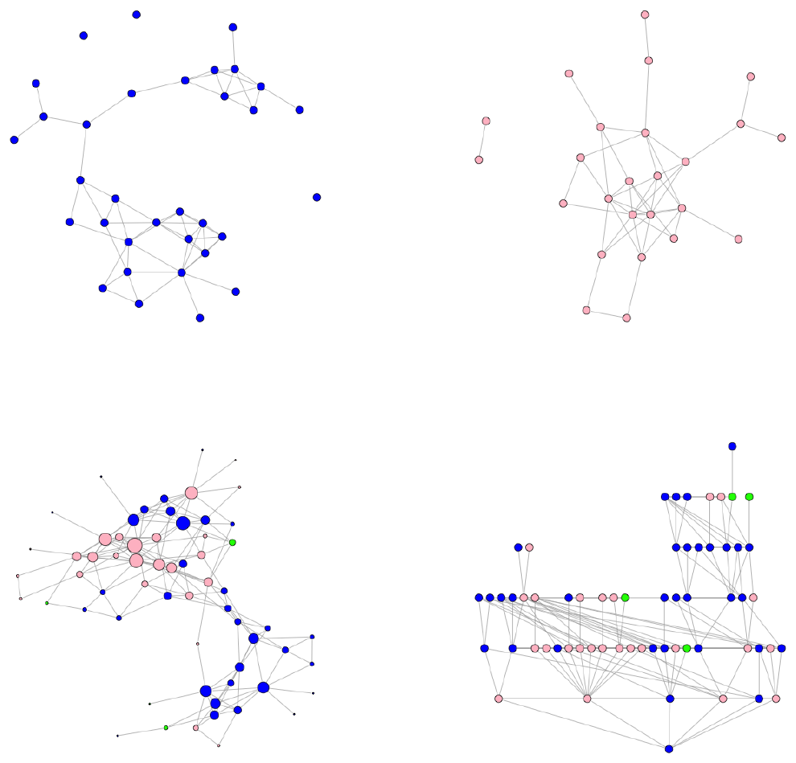

Théorie des graphes TD 1 · L3 S5 · interactif
Vocabulaire, degrés et représentations
On modélise deux petits systèmes réels par des graphes, un orienté et un pondéré, on y calcule voisinages et degrés, puis on les stocke de trois façons et l'on compare la mémoire de chacune. Le dernier exercice prend du recul sur ce qu'un graphe montre d'un réseau réel. Le TD met en œuvre le cours 1.
Objectifs
- Comprendre et savoir définir le vocabulaire de base en théorie des graphes.
- Décrire un graphe et maîtriser les notations associées.
- Modéliser sous forme de graphe un système du réel décrit textuellement.
- Comprendre les différences entre graphe non orienté, orienté, pondéré.
- Manipuler trois structures de stockage d'un graphe et apprécier leurs différences.
Notions utilisées
- Voisinage et degré, graphes orientés, graphes pondérés
- Représenter un graphe : liste d'arêtes, matrice d'adjacence, liste d'adjacence
- Un modèle ?
Mode d'emploi
- La réponse se construit sur le dessin ou dans la vue texte (« Les deux ») ; les deux restent synchronisés.
- « Vérifier » contrôle la forme sans rien dévoiler, « Comparer » mesure l'écart avec la solution proposée, « Claude » répond aux questions et corrige.
- Le travail s'enregistre tout seul. Avec le serveur local (
studies/lancer.bat), il va danstd_results/et Claude est disponible.
Conventions de saisie
Pour que « Comparer » puisse lire les réponses : dans un tableau, les sommets d'une liste s'écrivent dans l'ordre alphabétique, séparés par des virgules, et l'ensemble vide s'écrit ∅ (ou une case vide) ; un nombre décimal s'écrit avec deux chiffres après la virgule. Les questions qui demandent une définition ou une justification se rédigent dans un cadre de texte : leur solution est une proposition, que Claude peut discuter.
Exercice 1 · Micmac au conseil d'administration TD, p. 1
Un premier graphe orienté : qui influence qui dans un petit conseil d'administration. On y lit les voisinages et les degrés, entrants et sortants.
Exercice 1 Énoncé
Le conseil d'administration de l'entreprise X est composé de 7 personnes : A, M, N, J, T, L et V. Chacune de ces personnes influence certains membres du conseil conformément à la table 1.
| Mme ou M. | Influence |
|---|---|
| A | {M, L} |
| M | – |
| N | {M} |
| J | {T, V} |
| T | {N} |
| L | {J, T} |
| V | {N, T} |
Exercice 1 Question 1
En utilisant les notations vues en cours, explicitez le type de réseau d'influence pouvant être construit et ce à quoi correspondent les nœuds et les liens de ce dernier.
Exercice 1 Question 2
En vous appuyant sur les informations données dans la table 1, dessinez le graphe d'influence.
Exercice 1 Question 3
Qu'appelle-t-on voisinage entrant et sortant d'un sommet ? Donnez la définition sous forme de notation mathématique. Listez pour chaque sommet son voisinage entrant et son voisinage sortant.
Exercice 1 Question 4
À partir des voisinages extraits à la question précédente, donnez la définition du degré d'un sommet, puis calculez-le pour chacun des membres du conseil d'administration.
Exercice 1 Question 5
Quelle mesure sur les sommets du graphe permet de déterminer la ou les personnes ayant le plus d'influence et celle(s) ayant le moins d'influence directe (via un arc) au sein du conseil d'administration ?
Exercice 2 · Réseau de co-auteurs, co-autrices TD, p. 1–2
Un graphe non orienté et pondéré, cette fois : les co-publications d'une équipe de recherche. On y distingue le nombre de co-auteurs d'un chercheur et le nombre de ses collaborations, puis on le stocke de trois façons.
Exercice 2 Énoncé
On cherche à modéliser la co-publication d'articles scientifiques dans un groupe de recherche. On désigne les chercheurs par leurs initiales : VP, TP, ND, NC, SM, ML et AL. Dans le détail, les co-publications de ce groupe s'organisent ainsi ces trois dernières années :
- VP et TP ont co-publié deux articles, dont un avec NC et ND ;
- VP a co-publié sept articles avec NC et AL, dont quatre auxquels SM a participé ;
- TP a également publié deux articles avec ND, NC et SM ;
- ML a co-publié trois articles avec SM et AL.
Représentation sous forme de graphe
Exercice 2 2.1, question 1
À partir des quatre affirmations de la description, construire un graphe des co-publications au sein de l'équipe de recherche. Détailler ce que représentent les nœuds et les liens du réseau ainsi que les propriétés générales de celui-ci.
Exercice 2 2.1, question 2
Donnez le voisinage des nœuds SM et ND.
Mesures sur les sommets du graphe
Exercice 2 2.2, questions 1 à 5
- Quelle mesure permet de savoir combien de co-auteurs a chaque auteur ? Présentez les valeurs dans un tableau.
- Quel est l'auteur ayant le plus de co-auteurs ?
- Combien en moyenne un auteur a-t-il de co-auteurs ?
- Quelle mesure permet de déterminer combien de collaborations totales a un auteur ? Complétez le tableau construit en 1.
- Combien en moyenne un auteur a-t-il de collaborations ?
Représenter un graphe
Outre la représentation graphique du réseau, il est pratique de les stocker sous forme de structures de données facilement manipulables informatiquement.
Exercice 2 2.3, question 1
Projetez le graphe sous forme de liste d'arêtes (15 arêtes).
Exercice 2 2.3, question 2
Projetez le graphe sous forme de matrice d'adjacence.
Exercice 2 2.3, question 3
Projetez le graphe sous forme de liste d'adjacence.
Exercice 2 2.3, question 4
D'après vous, quelle structure de données est la plus adaptée pour stocker un graphe en mémoire et accéder aux arêtes du graphe ?
Calcul (approximatif) de l'espace mémoire nécessaire pour stocker un graphe
Exercice 2 2.4, question 1
En considérant que l'on remplace les noms des nœuds par des entiers Python (4 octets), calculer la mémoire nécessaire pour stocker chaque structure de données construite en 2.3. On ignorera l'espace mémoire inhérent à la structure de données.
Exercice 2 2.4, question 2
Considérons maintenant un graphe à 1000 sommets et 3000 arêtes non pondérées. Calculer la mémoire nécessaire pour chaque structure de données de la même manière. Qu'observe-t-on ?
Exercice 3 · Différents modèles du modèle : quelles questions pose-t-on ? TD, p. 2–4
Le dernier exercice ne demande aucun calcul : il s'agit de regarder un vrai réseau social, celui de dauphins de Doubtful Sound, et de se demander ce que l'on pourrait y mesurer. Chaque question annonce une notion des cours suivants.
Exercice 3 Énoncé
Dans les pages qui suivent, vous disposez de plusieurs visualisations du réseau social des dauphins. À partir de ces vues, répondre aux questions suivantes.


Exercice 3 Question 1
Si vous deviez diffuser une information, par exemple sur la présence de prédateurs (genre des humains) à éviter, par où commenceriez-vous cette diffusion dans le réseau ? Quels critères utilisez-vous ?
Exercice 3 Question 2
Il existe plusieurs façons de se déplacer sur le graphe pour aller de MN23 à Cross. On appelle chemin la liste des sommets par lesquels on passe lors d'un déplacement. Qu'ont en commun tous les chemins de MN23 à Cross ? Qu'apprend-on sur certains sommets ?
Exercice 3 Question 3
Certains sommets du réseau ont un degré élevé. Sont-ils les plus importants ? La contraposée est-elle vraie ?
Exercice 3 Question 4
Existe-t-il un ou des moyens de faire émerger des groupes au sein des dauphins pour mieux comprendre la façon dont leurs relations se structurent ?
Exercice 3 Question 5
Y a-t-il des sommets dont la suppression impacterait fortement la structure du réseau ?
Exercice 3 Question 6
Les graphes sont des modèles d'un système du réel. Par exemple, ici, on s'abstrait de la dynamique de ce système pour en étudier un état via un seul graphe. On observe qu'il est possible de visualiser de plusieurs façons ce graphe : qu'est-ce que ces visualisations semblent mettre en avant les unes par rapport aux autres ? Qu'est-ce que cela signifie en termes de modélisation ?
À retenir
Les méthodes
- Modéliser, c'est dire ce que sont les sommets, ce que sont les liens, et si ceux-ci sont orientés (relation non symétrique) ou pondérés (relation d'intensité variable).
- Dans un graphe orienté, N⁺(u) se lit sur les arcs qui partent de u et N⁻(u) sur ceux qui arrivent ; Σ d⁺ = Σ d⁻ = m.
- Dans un graphe non orienté, Σ d(u) = 2m : un bon contrôle des calculs de degrés.
- Le degré compte des voisins, le degré pondéré additionne les poids : ce ne sont pas les mêmes questions (co-auteurs ou collaborations).
- Mémoire : 2m (ou 3m avec les poids) pour la liste d'arêtes, 2m (ou 4m) pour la liste d'adjacence, n² pour la matrice ; sur un grand graphe creux, la matrice est hors de prix.
- Un même graphe se dessine de plusieurs façons, et chaque dessin met en avant autre chose : choisir la représentation selon la question.
Auto-évaluation
Un graphe orienté a 10 arcs. Que valent la somme des degrés sortants et la somme des degrés totaux ?
10 et 20 : chaque arc compte une fois comme sortant (à sa source) et une fois comme entrant (à sa cible).
Pourquoi le graphe des co-publications n'est-il pas orienté ?
Co-signer un article est une relation symétrique : si u a publié avec v, v a publié avec u. Une influence, elle, peut n'aller que dans un sens.
Deux chercheurs ont le même degré. Ont-ils forcément le même degré pondéré ?
Non : AL et ND ont tous deux 4 co-auteurs, mais 24 et 9 collaborations. Le degré compte les voisins, le degré pondéré les articles partagés avec eux.
Dans quel cas la matrice d'adjacence est-elle un bon choix ?
Pour un petit graphe, ou un graphe dense (m proche de n²/2), quand on doit souvent tester si deux sommets sont voisins : la réponse est immédiate. Pour un grand graphe creux, elle gaspille la mémoire.
Un sommet de faible degré peut-il être indispensable à un réseau ?
Oui, s'il est le seul pont entre deux groupes : le supprimer les déconnecte. L'importance d'un sommet ne se résume pas à son degré.